Como usar o VoltMap
O VoltMap é um mapa colaborativo de pontos de recarga para veículos elétricos. Encontre pontos próximos, veja os detalhes, cadastre novos pontos, faça check-in, registre suas recargas e pague por cartão ou Pix.
Versão 0.1 · buscar e consultar pontos é livre; as demais funções pedem uma conta.
1. Acessar a aplicação
- Abra o navegador (Safari, Chrome, Firefox ou Edge) e acesse voltmap-u1iy.onrender.com.
- No primeiro acesso do dia, a página pode levar até 1 minuto para abrir: o servidor gratuito está "acordando".
- Quando o navegador pedir, permita a localização para ver os pontos perto de você.
Conta de demonstração: motorista@voltmap.com · senha voltmap123.
2. Instalar no celular (como app)
iPhone (Safari): toque em Compartilhar (quadrado com seta) → Adicionar à Tela de Início → Adicionar. Abra pelo ícone verde.
Android (Chrome): toque em Instalar no aviso verde acima do mapa (ou menu ⋮ → Instalar app).
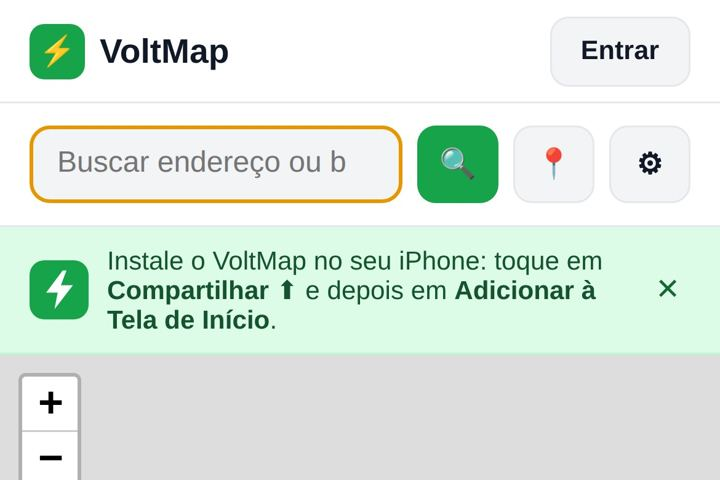
No app instalado, faça login novamente: ele guarda o login separado do navegador.
3. Criar conta e entrar
- Toque em Entrar (topo) ou em ＋ Adicionar ponto.
- Sem conta? Toque em Cadastre-se, preencha nome, e-mail e senha (mínimo 6 caracteres) duas vezes e toque em Criar conta.
- Com conta, informe e-mail e senha e toque em Entrar. Seu nome aparece no topo.
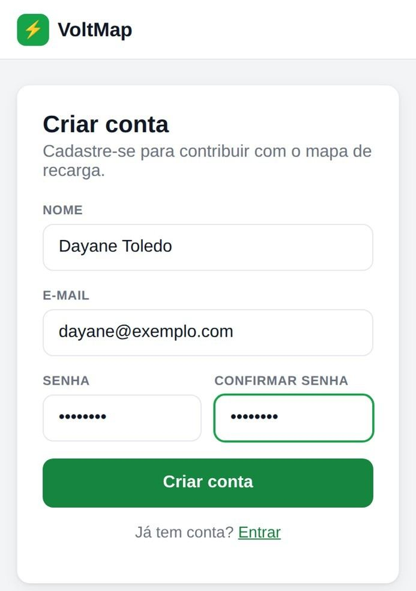
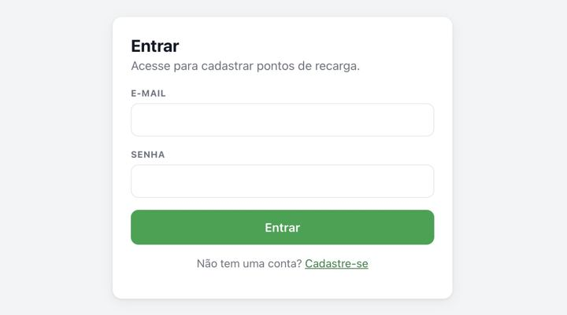
"E-mail ou senha inválidos": confira os dados. "Conta bloqueada": fale com o suporte. Para sair, toque em Sair.
4. Buscar pontos próximos
- O mapa mostra os pontos em até 10 km, e a lista os ordena do mais próximo ao mais distante.
- Para buscar outro lugar, digite um endereço na barra e toque em 🔍; 📍 volta à sua localização.
- Arrastou o mapa? Toque em ↻ Buscar nesta área.
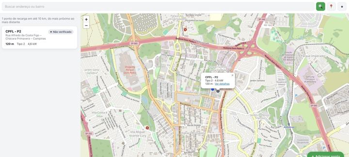
Disponível Ocupado Fora de serviço Não verificado
5. Filtrar resultados
Toque em ⚙ e escolha tipo de conector, disponibilidade, potência mínima e raio (5 a 50 km). O resultado atualiza na hora. Sem resultados, o VoltMap oferece buscar em um raio maior.
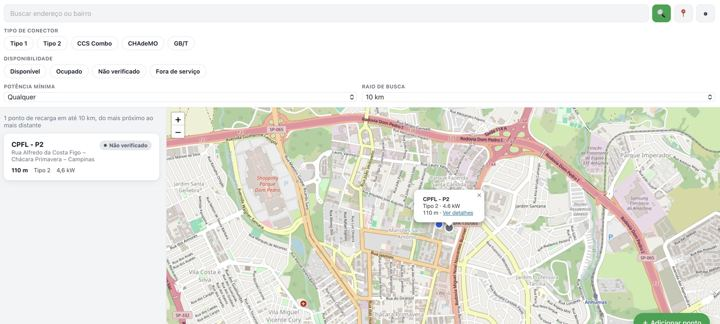
6. Detalhes do ponto e rota
Toque em um ponto da lista (ou em Ver detalhes no mapa) para ver conector, potência, vagas, horário, status e mapa. Como chegar abre a rota no Google Maps.
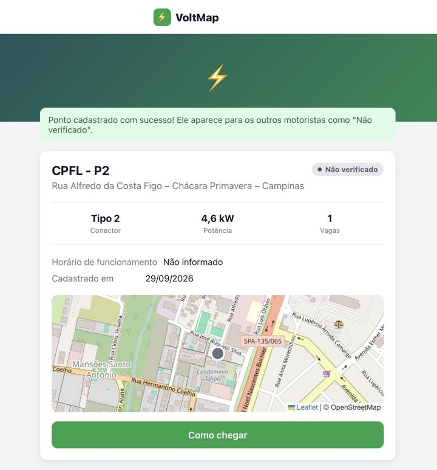
7. Cadastrar um novo ponto
- No mapa, toque em ＋ Adicionar ponto (é preciso estar logado).
- Busque o endereço ou toque no mapa; arraste o marcador para o local exato.
- Preencha nome, tipos de conector, potência (kW), vagas e horário, e toque em Salvar Ponto de Recarga.
O ponto aparece para todos como Não verificado. Se já houver um ponto a menos de 50 m, o VoltMap avisa: escolha Revisar ou Cadastrar mesmo assim.
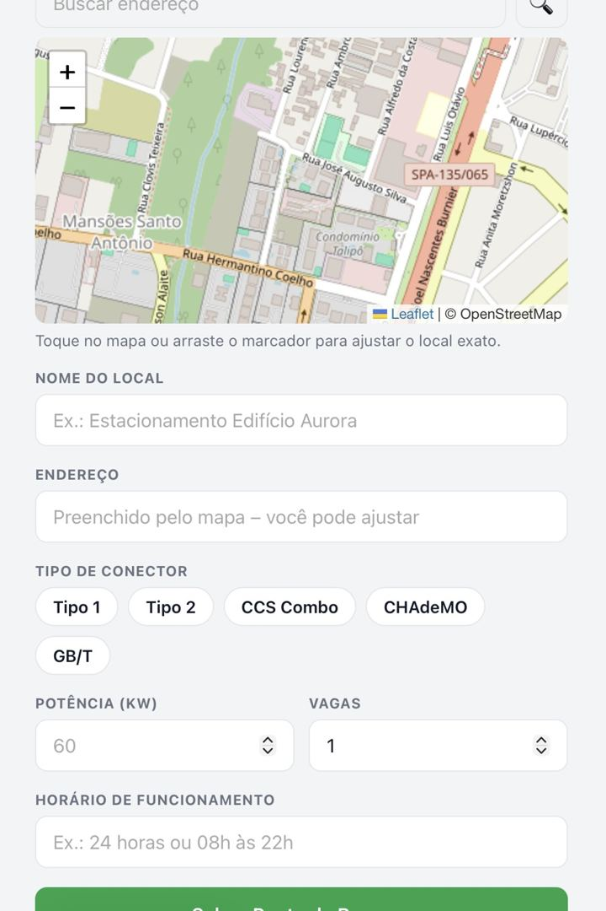
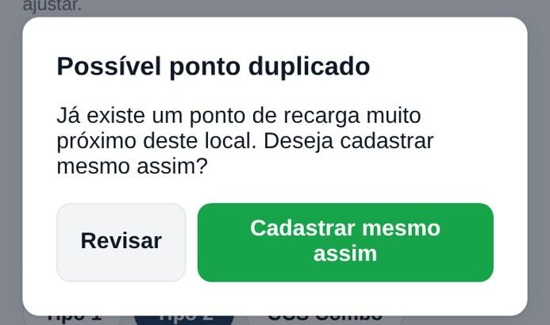
8. Fazer check-in
- Na página do ponto, em Fazer check-in, escolha Disponível, Ocupado ou Fora de serviço.
- Se quiser, escreva um comentário e toque em Confirmar Check-in.
O status vale por 2 horas e aparece em Check-ins recentes. "Fora de serviço" sinaliza o ponto para verificação.
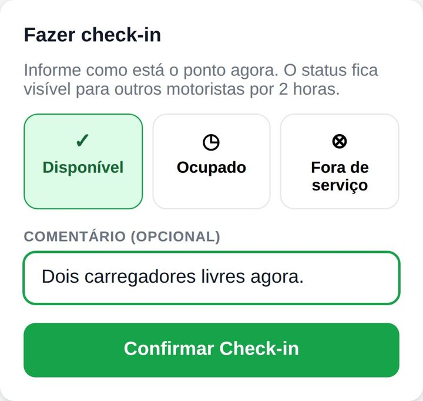
9. Recarga ativa
- Na página do ponto, toque em ⚡ Iniciar recarga aqui e escolha a forma de pagamento (item 10).
- O ponto fica Ocupado e uma faixa verde no topo do mapa mostra sua recarga.
- Ao terminar, toque em Encerrar recarga e liberar a vaga.
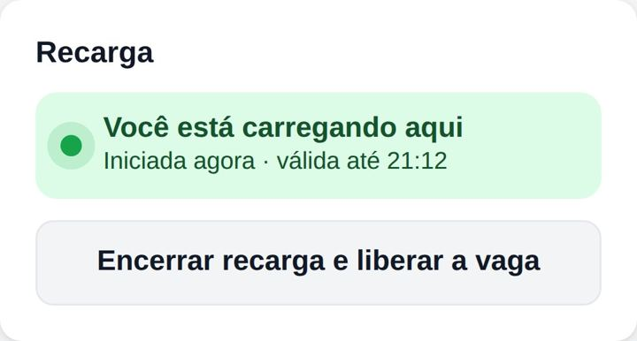
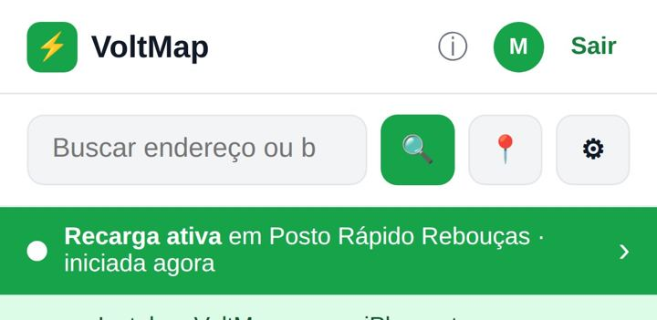
10. Pagamento (cartão ou Pix)
🧪 Modo demonstração: nenhuma cobrança é realizada.
- Cadastrar cartão: em Meu perfil → Formas de pagamento, toque em ＋ Cadastrar cartão de crédito. Para testar: 4242 4242 4242 4242.
- Pagar: ao iniciar a recarga, escolha um cartão salvo ou Pix.
- Resumo: ao encerrar, veja duração, energia (kWh), preço de referência e total estimado. Com Pix, aparece um código copia e cola de demonstração.
🔒 O VoltMap guarda apenas a bandeira e os 4 últimos dígitos do cartão.
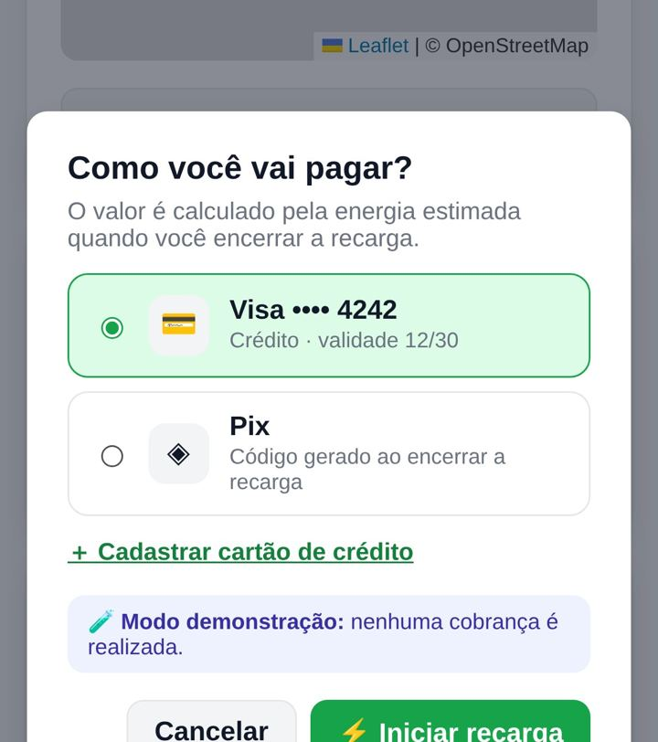
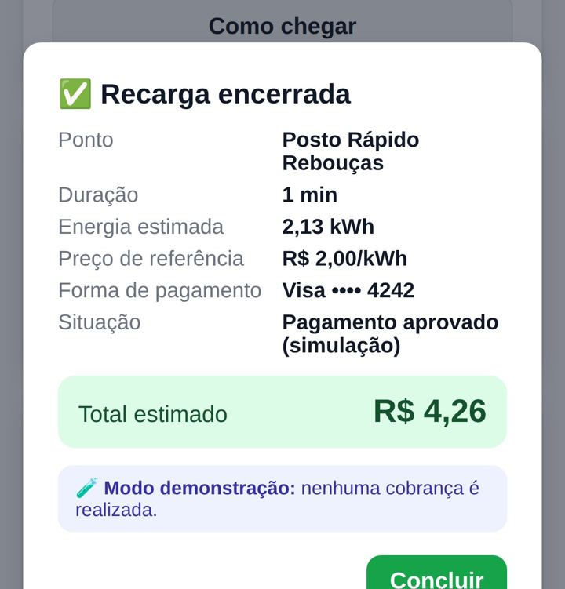
11. Favoritos
Na página do ponto, toque na estrela ☆; ela fica amarela ★. Toque de novo para remover. Seus favoritos ficam em Meu perfil.
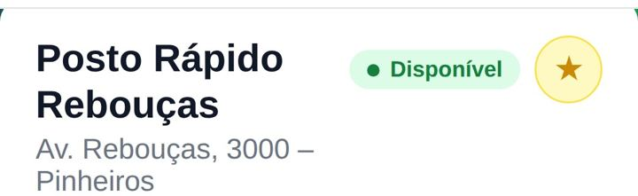
12. Meu perfil
Toque no seu nome (topo). Você vê recarga ativa, resumo, favoritos, pontos que cadastrou, check-ins, Minhas recargas (energia e valor), Formas de pagamento, e pode alterar nome e senha.
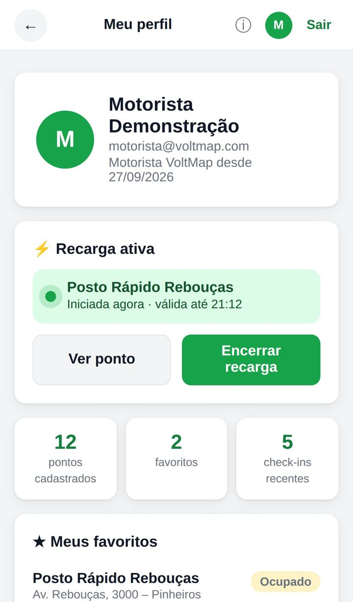
13. Versão do aplicativo
Toque em ⓘ no topo para abrir Sobre o VoltMap: versão publicada, tag no GitHub, commit, data de publicação, novidades e histórico de versões.
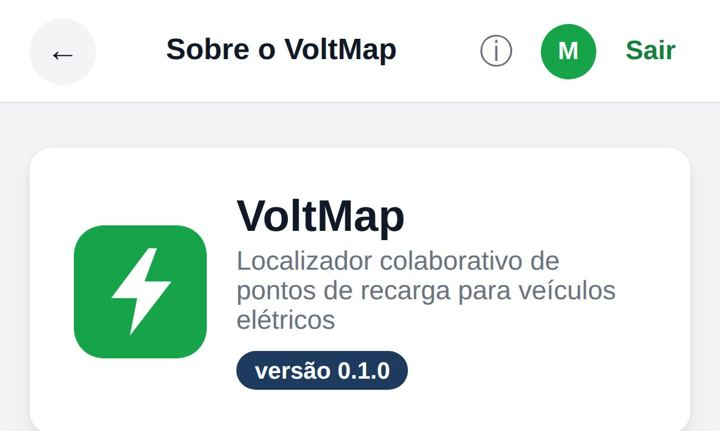
14. Problemas comuns
- A página demora para abrir
- Aguarde até 1 minuto no primeiro acesso do dia.
- O mapa não mostra minha posição
- Permita a localização no navegador ou busque por endereço.
- "Endereço não encontrado"
- Inclua a cidade, por exemplo "Rua Augusta, São Paulo".
- Nenhum ponto aparece
- Aumente o raio ou remova filtros.
- "Sessão expirada"
- Entre novamente; a sessão dura 8 horas.